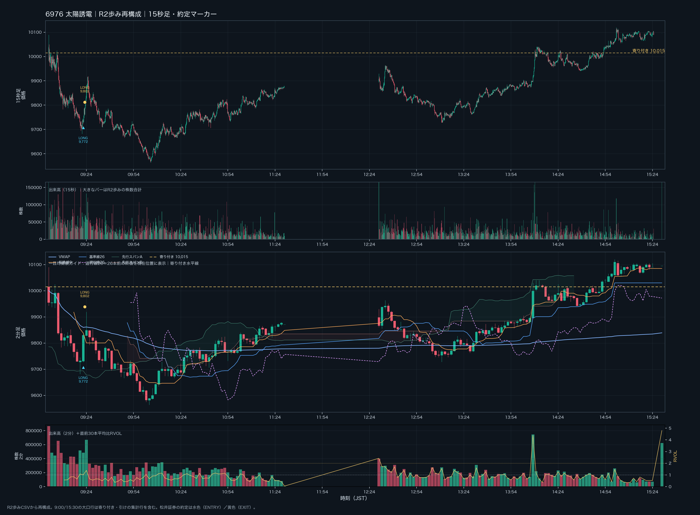
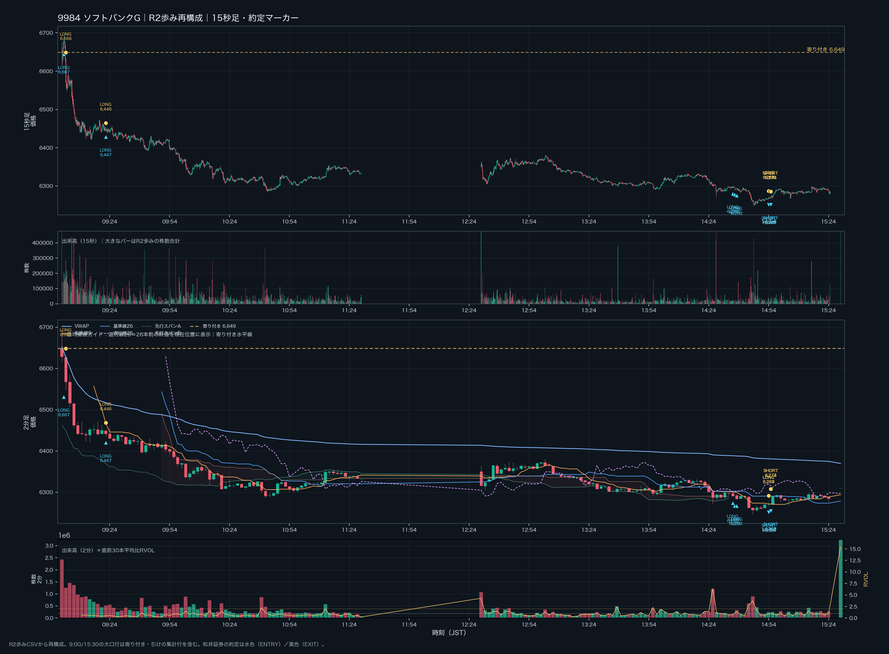

問題 1｜場面を見極める
下げ止まりを確認してからのロング
BEFORE｜09:21ごろ・太陽誘電（6976）
寄り付き後に下落。9,700円付近を一度下抜けたあと、大きな出来高を伴う買い戻しのピンバーが出て、安値更新が止まり始めています。次のエントリー判断として最も適切なのはどれでしょう？

BEFORE｜太陽誘電 6976｜10/2の日中チャート。右側を隠しています。タップすると全体を拡大できます。
チャートを見て、根拠と損切り位置を考えてから選んでください。回答後に同じチャートの全体を表示します。
正解：C。出来高が増えた事実だけでなく、その後に価格が安値を更新できないこと、買い戻しが続くことを確認します。無効化ラインを先に決めてから入る形です。
AFTER｜実際の約定：09:22に9,772円で100株ロング、09:23に9,802円で返済。価格差損益は ＋3,000円。日誌では、この日の下げ止まりロングで最も根拠を説明しやすい取引と整理されています。
AFTER｜太陽誘電 6976｜同じ日中チャートの全体。タップすると拡大できます。
出典：10/2 約定照合済み日誌
問題 2｜負けた取引を振り返る
寄り付き直後の先回りロング
BEFORE｜09:01・ソフトバンクグループ（9984）
日経平均は上方向を意識しています。一方で寄り付き直後は売買が集中しており、個別銘柄では下げ止まりや買い継続をまだ確認できていません。あなたならどうしますか？

BEFORE｜ソフトバンクグループ 9984｜10/2の日中チャート。右側を隠しています。タップすると全体を拡大できます。
チャートを見て、根拠と損切り位置を考えてから選んでください。回答後に同じチャートの全体を表示します。
正解：B。9:00〜9:05は原則エントリーしないルールです。指数の見立てや寄り付きの大出来高だけでは、個別銘柄の買いを確認したことになりません。9:05以降も、価格反応・損切り位置・残る利幅が揃うまでは待ちます。
AFTER｜実際の約定：09:01に6,667円で100株ロングし、09:02に6,568円で返済。価格差損益は −9,900円。9984全体では当日8組で−19,800円でした。日誌では、個別の値動きより日経平均の上向きと再上昇のイメージを優先した取引と振り返っています。
AFTER｜ソフトバンクグループ 9984｜同じ日中チャートの全体。タップすると拡大できます。
出典：10/2 約定照合済み日誌